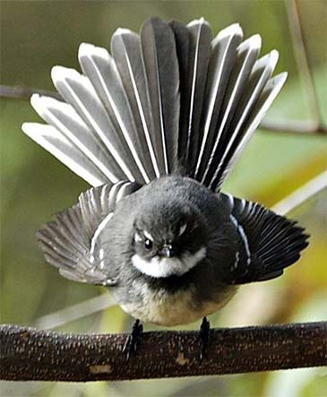

フリーランス Webデザイナー
Photoshop，Illustrator，Adobe XD，Figmaを使用しWebデザインはもちろんのこと、ポスター、チラシ、名刺等の作成。
HTML, CSS, JavaScript, jQueryを使用したコーディング業務。設計からデザイン、コーディングまで一貫して承ります。
自然大国のニュージーランド在住
初めまして。フリーランス Webデザイナーの稲田景子と申します。
東京の大学を卒業後、IT会社へ就職し三年半務めた後、テレビを見て平和過ぎると思っていたニュージーランドへ飛びました。それから縁があって今現在もニュージーランドに居ます。十年ちょっと海運業界で務め、2021年よりフリーランスのWebデザイナーとなり今に至ります。
自然と犬が大好き! 常に新しいことに挑戦!! がモットーです。
今年は高所恐怖症にも関わらずスカイダイビング。。。一生に一度と決めていたので、ニュージーランドで一番の高さ、185,00ft(5,639m)からの落下。パラシュートが開くまで約75秒ものあいだ急降下、、、そして今の私です。